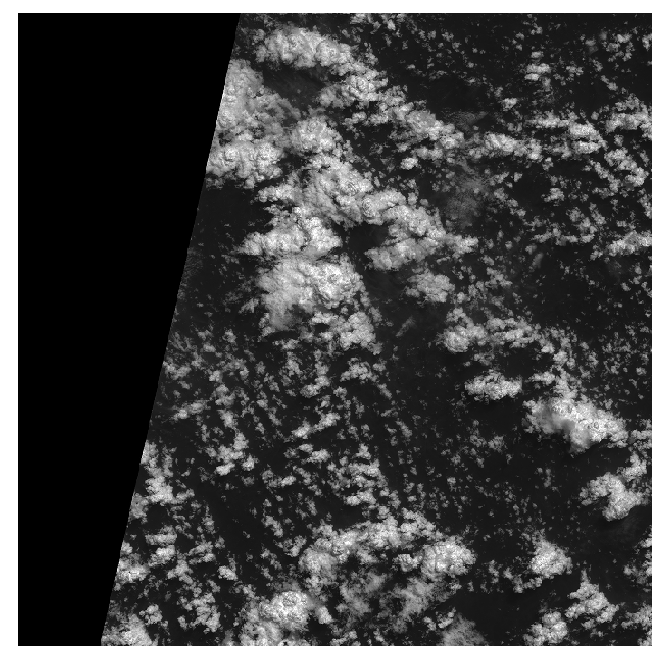
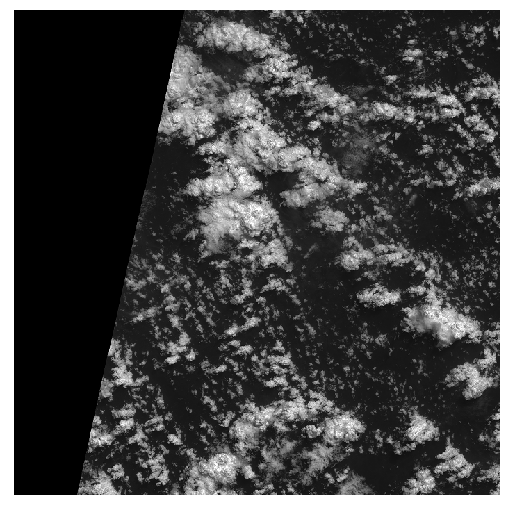

Creating Cloud Corrected Sentinel-2 Images
Erick Verleye, ESIIL Software Developer
A common issue when working with remote imaging data is that for a single image, it is likely that the instrument's field of view is at least partially occulted by clouds. A popular approach to producing a cloud-cleaned image over a particular region is to stitch together a time series of images to create a composite.
In this tutorial, we will create cloud-cleaned composites from Sentinel2 Level-1 C data acquired by the methods described at https://data-library.esiil.org/reomte_sensing/sentinel2_aws/sentinel2_aws.
The steps to creating a cloud-cleaned composite are outlined as:
- For each Sentinel-2 image in the time series:
-- Use cloud file to filter image pixels which are 0 or above some threshold
- Combine filtered images over the entire time series into one composite using the median of pixel values
First let's look at the file structure created after downloading the data:
There is information about the location, date, and file contents in the file name.
The structure is
The strategy will be to process the files as groups according to their military grid tile and band across the entire time series. For example, a single processing group for tile 36NTF and Band 2 would be:
[ 2017_6_17/36_N_TF_2017_6_17_0_B02.jp2, 2017_6_24/36_N_TF_2017_6_24_0_B02.jp2, 2017_6_27/36_N_TF_2017_6_27_0_B02.jp2 ]
The cloud file for each military tile and date will always end in '_qi_MSK_CLOUDS_B00.gml' and can be used to correct all other bands.
Let's now introduce some code that will allow us to process a single tile and band at a time.
In this tutorial we are creating composites from a relatively short time series. In practice, it may take several months worth of data to create a sufficiently cloud-free composite. Working with large time series sets is a memory intensive process. Thus, we will also be implementing a 'slice' parameter which allows the user to specify how many slices the images should be split into when processing. For example, when the slices parameter is 20, only 1/20th of each image will be cloud corrected at a time. At the end, these slices will be stitched back together.
First, we must import some modules. The non-native package versions used are:
- rasterio==1.3.6
- geopandas==0.13.0
- numpy==1.24.3
- tqdm==4.65.0
You must also have GDAL installed, the version used for this tutorial is 3.6.4
import os
import warnings
import shutil
import rasterio
from rasterio import features
from rasterio.windows import Window
import geopandas as gpd
import numpy as np
from tqdm import tqdm
Next, we define some constants and helper functions for loading in data and cleaning it:
MAX_BAND_VAL = 4000 # counts
# Helper function for opening Sentinel-2 jp2 files, with optional slicing
def get_img_from_file(img_path, g_ncols, dtype, row_bound=None):
img = rasterio.open(img_path, driver='JP2OpenJPEG')
ncols, nrows = img.meta['width'], img.meta['height']
assert g_ncols == ncols, f'Imgs have different size ncols: {ncols} neq {g_ncols}'
if row_bound is None:
pixels = img.read(1).astype(np.float32)
else:
pixels = img.read(
1,
window=Window.from_slices(
slice(row_bound[0], row_bound[1]),
slice(0, ncols)
)
).astype(dtype)
return pixels
# Helper function for reading in cloud file array, with optional slicing
def get_cloud_mask_from_file(cloud_path, crs, transform, shape, row_bound=None):
# filter out RuntimeWarnings, due to geopandas/fiona read file spam
# https://stackoverflow.com/questions/64995369/geopandas-warning-on-read-file
warnings.filterwarnings("ignore", category=RuntimeWarning)
try:
cloud_file = gpd.read_file(cloud_path)
cloud_file.crs = (str(crs))
# convert the cloud mask data to a raster that has the same shape and transformation as the
# img raster data
cloud_img = features.rasterize(
(
(g['geometry'], 1) for v, g in cloud_file.iterrows()
),
out_shape=shape,
transform=transform,
all_touched=True
)
if row_bound is None:
return np.where(cloud_img == 0, 1, 0)
return np.where(cloud_img[row_bound[0]:row_bound[1], :] == 0, 1, 0)
except Exception as e:
return None
# Function for filtering out cloud pixels
def nan_clouds(pixels, cloud_channels, max_pixel_val: float = MAX_BAND_VAL):
cp = pixels * cloud_channels
mask = np.where(np.logical_or(cp == 0, cp > max_pixel_val))
cp[mask] = np.nan
return cp
Finally we define our main function, which will create our cloud-cleaned composite for a single military tile and optical band:
def create_cloud_cleaned_composite(in_dir: str, mgrs_tile: str, band: str, out_file: str, num_slices: int = 12) -> None:
"""
Creates a cloud cleaned composite tif file from a set of sentinel 2 files
Args:
in_dir (str): Directory containing all of the date directories which contain the sentinel 2 data
mgrs_tile (str): The military grid coordinate (35MGR, 36MTV, etc.) to create the composite for
band (str): The optical band for which to create the composite for (B02, B03, B08) etc.
num_slices (int): The amount of slices to split the composite up into while building it.
More slices will use less RAM
"""
# Loop through each band, getting a median estimate for each
crs = None
transform = None
# Find each optical and cloud file in the input directory for the mgrs_tile and band combination
mgrs_str = f'{mgrs_tile[:2]}_{mgrs_tile[2]}_{mgrs_tile[3:]}'.upper()
band_str = band.upper()
dates = os.listdir(in_dir)
file_sets = []
for date_dir in dates:
optical_file = None
cloud_file = None
for file in os.listdir(os.path.join(in_dir, date_dir)):
f_up = file.upper()
file_path = os.path.join(in_dir, date_dir, file)
if mgrs_str in file and band_str in file:
optical_file = file_path
elif mgrs_str in file and 'MSK_CLOUDS_B00' in file:
cloud_file = file_path
if optical_file is None or cloud_file is None:
continue
file_sets.append((optical_file, cloud_file))
# Resolve the crs and other optical file attributes. Should be the same
# regardless of date so loop through all until found
crs = None
transform = None
g_nrows = None
g_ncols = None
for file_set in file_sets:
with rasterio.open(file_set[0], 'r', driver='JP2OpenJPEG') as rf:
g_nrows = rf.meta['height'] if g_nrows is None else g_nrows
g_ncols = rf.meta['width'] if g_ncols is None else g_ncols
crs = rf.crs if crs is None else crs
transform = rf.transform if transform is None else transform
if crs is not None and transform is not None and g_nrows is not None and g_ncols is not None:
break
if crs is None or transform is None or g_nrows is None or g_ncols is None:
raise LookupError(f'Could not determine the following projection attributes from the available '
f'sentinel2 files in {in_dir}: \n' \
f'{"CRS" if crs is None else ""} '
f'{"Transform" if transform is None else ""} '
f'{"Number of rows" if g_nrows is None else ""} '
f'{"Number of columns" if g_ncols is None else ""}')
# Determine the slicing bounds to save memory as we process
slice_height = g_nrows / num_slices
slice_end_pts = [int(i) for i in np.arange(0, g_nrows + slice_height, slice_height)]
slice_bounds = [(slice_end_pts[i], slice_end_pts[i + 1] - 1) for i in range(num_slices - 1)]
slice_bounds.append((slice_end_pts[-2], slice_end_pts[-1]))
# Correct the images one slice at a time, and then combine the slices. First create a temp directory in
# the out_dir to store the slices
slice_dir = os.path.join(os.path.dirname(out_file), 'slices')
os.makedirs(slice_dir, exist_ok=True)
for k, row_bound in tqdm(enumerate(slice_bounds), desc=f'band={band}', total=num_slices, position=2):
slice_file_path = os.path.join(slice_dir, f'{row_bound[0]}_{row_bound[1]}.tif')
cloud_correct_imgs = []
for file_set in tqdm(file_sets, desc=f'slice {k + 1}', leave=False, position=3):
# Get data from files
optical_file = file_set[0]
cloud_file = file_set[1]
pixels = get_img_from_file(optical_file, g_ncols, np.float32, row_bound)
cloud_channels = get_cloud_mask_from_file(cloud_file, crs, transform, (g_nrows, g_ncols), row_bound)
if cloud_channels is None:
continue
# add to list to do median filter later
cloud_correct_imgs.append(nan_clouds(pixels, cloud_channels))
del pixels
corrected_stack = np.vstack([img.ravel() for img in cloud_correct_imgs])
median_corrected = np.nanmedian(corrected_stack, axis=0, overwrite_input=True)
median_corrected = median_corrected.reshape(cloud_correct_imgs[0].shape)
with rasterio.open(slice_file_path, 'w', driver='GTiff', width=g_ncols, height=g_nrows,
count=1, crs=crs, transform=transform, dtype=np.float32) as wf:
wf.write(median_corrected.astype(np.float32), 1)
# release mem
median_corrected = []
del median_corrected
corrected_stack = []
del corrected_stack
# Combine slices
with rasterio.open(out_file, 'w', driver='GTiff', width=g_ncols, height=g_nrows,
count=1, crs=crs, transform=transform, dtype=np.float32) as wf:
for slice_file in os.listdir(slice_dir):
bound_split = slice_file.split('.')[0].split('_')
top_bound = int(bound_split[0])
bottom_bound = int(bound_split[1])
with rasterio.open(os.path.join(slice_dir, slice_file), 'r', driver='GTiff') as rf:
wf.write(
rf.read(1),
window=Window.from_slices(
slice(top_bound, bottom_bound),
slice(0, g_ncols)
),
indexes=1
)
shutil.rmtree(slice_dir)
print(f'Wrote file to {out_file}')
Let's run an example now, using the files downloaded in the sentinel2 on aws tutorial for mgrs 36NUG and band B02. A figure of the file structure is included above. Make sure to change the in_dir and out_file parameters to match your environment.
create_cloud_cleaned_composite(in_dir=<your_in_dir>, mgrs_tile='36NUG', band='B02', out_file='test.tif')
This should create an output file called test.tif in your working directory that is cloud cleaned. Let's take a look at the results.
First, let's look at the sentinel2 B02 file used from each day:
 


As you can see there are many clouds, and sometimes the image is not fully populated with values.
Let us now look at the output file, test.tif, and see if the clouds were removed and the images stitched together.

We can see that all of the areas that used to be clouds are now NaN, or white in the image. As stated previously, to get a full image with no NaNs may require months worth of data. It is achievable with this code, but too much for this tutuorial. Over several months there will be days where the areas now in white are not covered by clouds, and thus the median of those days' pixels will begin to fill in the white spots until you have a full image.